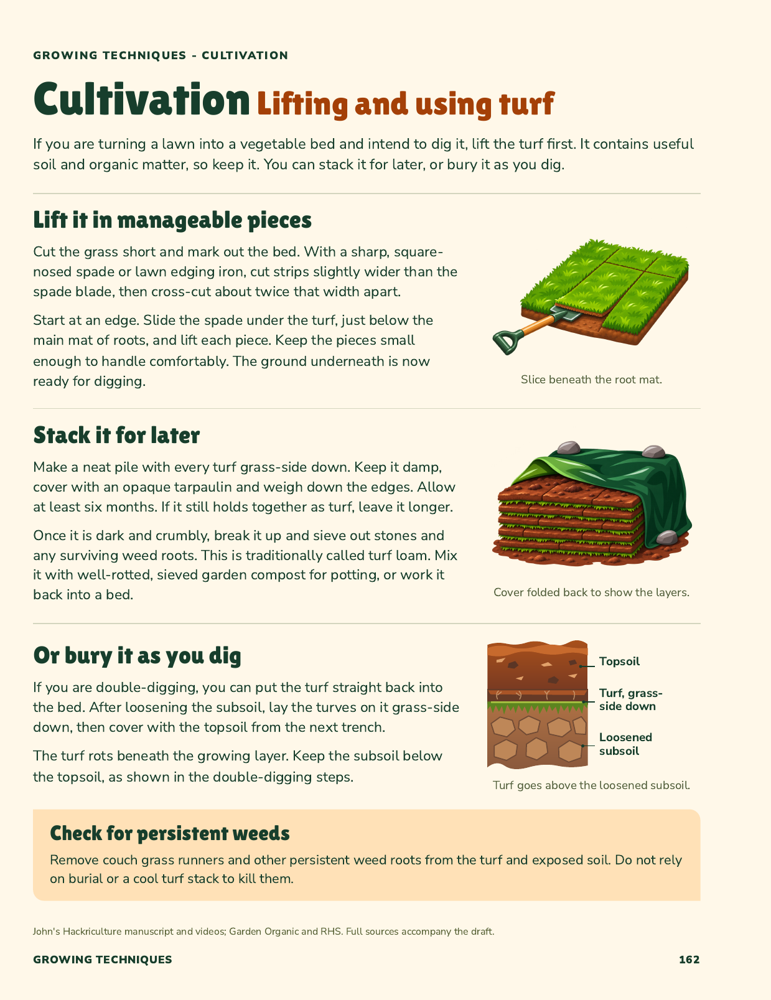
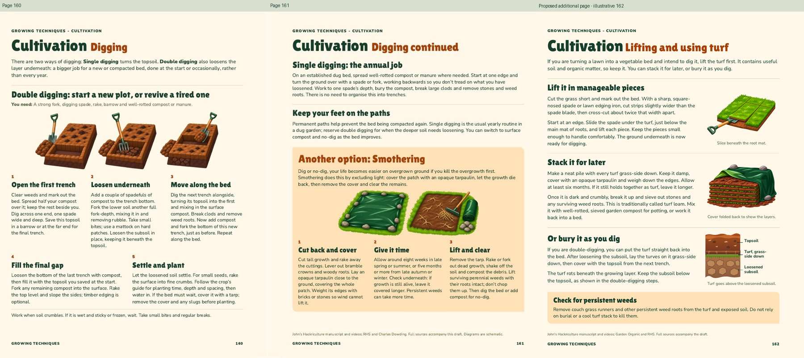

Cultivation: lifting and using turf
Approved on 3 November 2026 and integrated after Digging at page 162. The three drawings show lifting turf, stacking it to rot, and the alternative of burying it during double-digging.
View page 162 in the complete book, facing Sowing at 163. Contents, numbering and index are updated.

Beside the existing Digging pages
This is a reading-order comparison, not a facing spread. The complete-book viewer shows the final facing pages.
